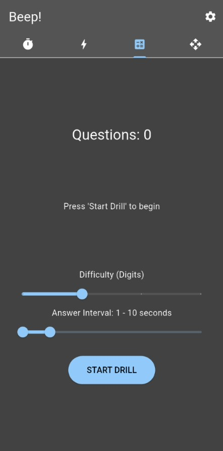
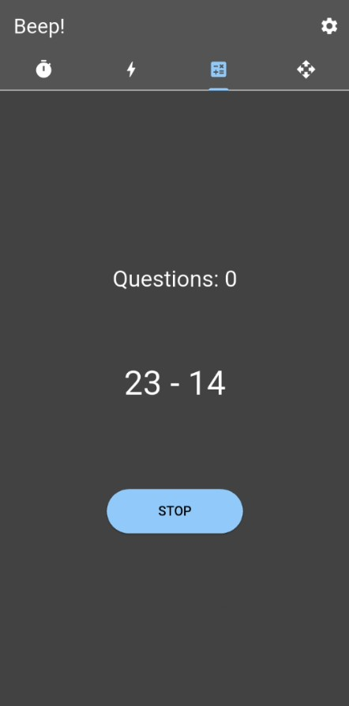
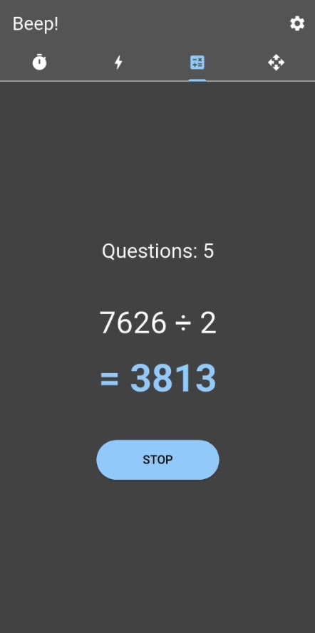
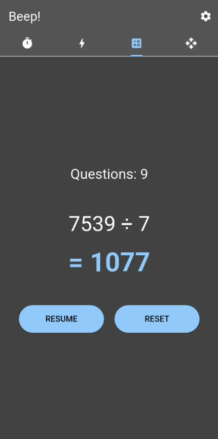

دریل محاسبات ریاضی (Dual-Task Training) 🧠
تمرین همزمان عصب و عضله؛ ظرفیت پردازش مغزت رو تحت فشار شدید فیزیکی به چالش بکش و یاد بگیر که چطور در اوج حرکت و خستگی، سریع و بینقص تصمیمگیری کنی!
💡 فلسفه تمرینات دوگانه (Dual-Tasking) چیه؟
توی مسابقات ورزشی، مبارزات رزمی یا موقعیتهای پرفشارِ گیمینگ، شما هیچوقت ثابت یکجا نمیشینید که فقط فکر کنید. مغز شما باید همزمان که تعادل بدن، جابجایی پاها و حرکات تکنیکی رو مدیریت میکنه، سریعترین استراتژیها و محاسبات رو هم انجام بده. این بخش از اپلیکیشن بیپ دقیقاً برای همین ساخته شده؛ ایجاد یک **بار شناختی مصنوعی (Cognitive Load)** در حین تمرین فیزیکی.
این دریل رو با حرکاتی مثل طنابزدن، شدوباکسینگ (سایهزنی)، پلانک پویا، یا گامبرداری رزمی ترکیب کن. همزمان که بدنت در حال حرکته، چشمت به صفحه است تا به محض تغییر فواصل، محاسبات رو انجام بدی و پاسخ رو توی ذهنت بگی.
جداسازی کانون تمرکز! با این روش، سیستم عصبی تو عادت میکنه که در شرایط خستگی مفرط یا ترشح آدرنالین، دچار کوری محیطی یا قفلشدگی ذهنی نشه و کانالهای پردازش داده رو باز نگه داره.

تنظیم دستی درجه سختی و فواصل پاسخدهی
شروع چالش کاملاً در کنترل توست. در این بخش، اپلیکیشن به صورت خودکار سختی رو بالا نمیبره، بلکه این خودت هستی که بر اساس سطح آمادگی ذهنت، میدان بازی رو میچینی. با دو اسلایدر نئونی میتونی پارامترهای زیر رو شخصیسازی کنی:
- سختی بر اساس ارقام (Difficulty - Digits): با این اسلایدر مشخص میکنی که اعداد تولید شده چند رقمی باشن (تکرقمی ساده، دورقمی، یا چندرقمیهای چالشبرانگیز برای نوابغ!).
- بازه زمانی پاسخ (Answer Interval): بازه زمانی مجاز برای تغییر سوالات رو تعیین میکنی (مثلاً بین ۱ تا ۱۰ ثانیه) تا ریتم ناگهانی چالش حفظ بشه.

شروع دریل و مواجهه با اولین چالش دیداری
به محض فشردن دکمه START DRILL، موتور محاسباتی بیپ فعال میشه. شمارنده سوالات از صفر شروع شده و اولین مسئله تصادفی روی پسزمینه تیره صفحه نقش میبنده (مثل 14 - 23). حالا زمان بر علیه توست! باید همزمان با حفظ ریتم حرکت بدنت، پاسخ رو در سریعترین زمان ممکن در مغزت فرمولهسازی کنی.

افزایش پویای سوالات و تغییر عملیاتها
با گذشت زمان و طبق بازه تصادفی که تعریف کردی، سوالات تغییر میکشن. سیستم انواع عملیاتهای اصلی (جمع، تفریق، ضرب و تقسیم) رو بر اساس تعداد ارقامی که در ابتدا تعیین کردی بهت نمایش میده. برای مثال، مواجهه با یک تقسیم چندرقمی مثل 2 ÷ 7626 دقیقاً همان نقطهای است که تمرکزت رو به اوج میرسونه تا پاسخ یعنی 3813 رو پیدا کنی. دکمه STOP در هر لحظه آماده است تا جریان چالش رو متوقف کنه.

تداوم دریل و امکان کنترل جریان تمرین
هرچه جلوتر میری، شمارنده بالای صفحه تعداد کل سوالات رد شده رو ثبت میکنه (مثلاً Questions: 9). اگر در حین طنابزدن یا تمرین فیزیکی نیاز به استراحت داشتی یا خواستی ریتمت رو بازسازی کنی، کلیدهای کنترل پایینی به کمکت میان؛ میتونی با زدن RESUME تمرین رو ادامه بدی یا با فشردن RESET کل سشن رو صفر کنی و با یک تنظیمات جدید از نو شروع کنی!